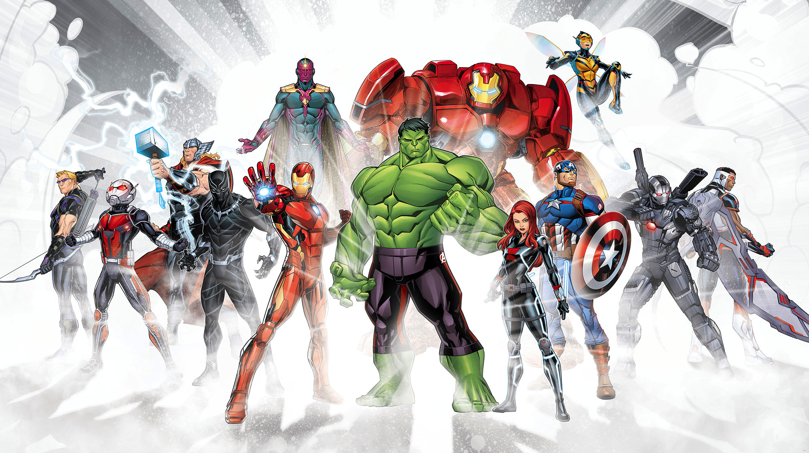
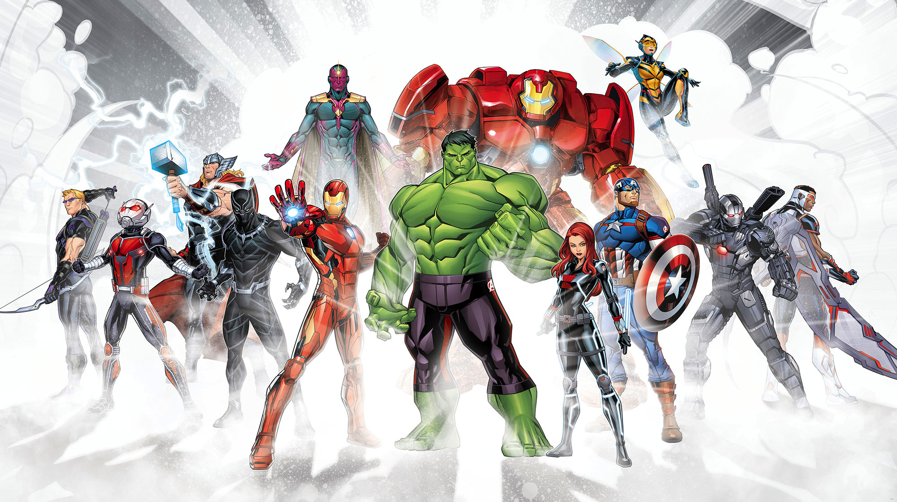
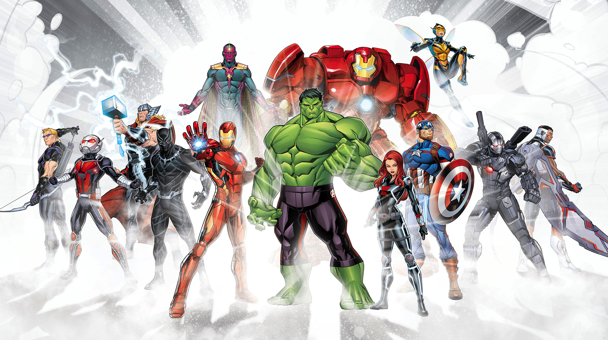
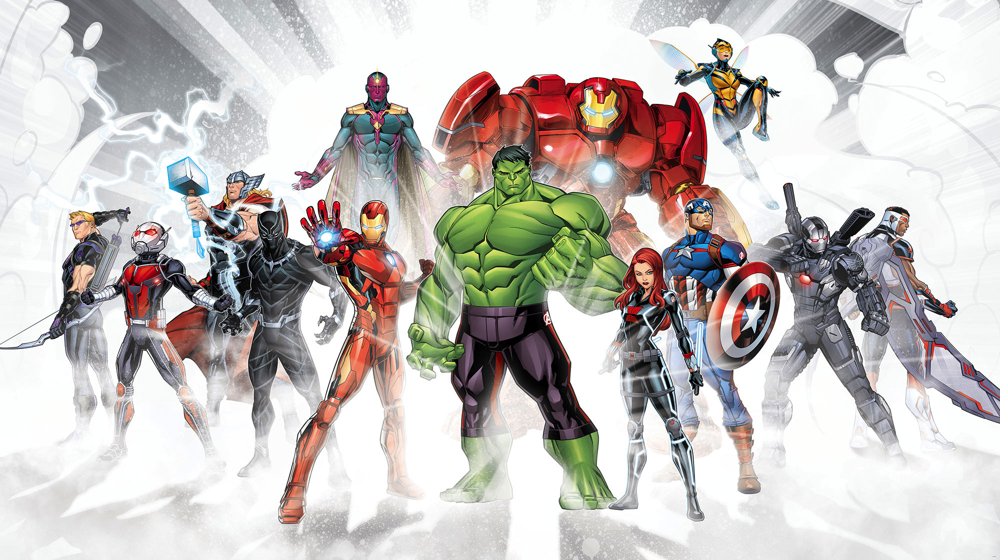

The Avengers are group of super powered indivisuals who protect the earth and some time the whole universe from danger they were mainly group of six indivisuals cosisting of The Hulk, Captain America, Iron-Man, Black Widow, Hawkeye, Thor. Avengers projects was one of the world saving projects created by Strategic Homeland Intervention, Enforcement and Logistics Division (S.H.I.E.L.D) the director of shield who managed the at start was director of S.H.I.E.L.D Nick Fury after some time avengers became indipendent group funded by stark idustries of one of the main six avengers or considered in big three tony stark who is also iron-man. the leader of the team is Captain America though some fans debate that iron-man is the leader but in most of the movies Captain america is seen as the leader of the group. the group also recruted new avengers in team in avengers age of ultron like vision, quik silver though he was not part of the group for long but is still remembered as a avenger, scarlet wich known as wanda maximof sister of quik silver wanda and her brother was native of sucovia which was destroyed at the end of the movie, falcon he also friend of captain america and war machine also was a great friend of tony stark known as leftinet chonel rodes.
After the scovia incident the avengers was to sign a contract in which they had to follow the rules of goverment due to which civil war broke out in the avengers mainly between team iron-man consisting of war machine, black widow, vision, a new avenger black panther and soon be a new avenger spider-man the second was team captain america consisting of wanda, falcon, hawkeye,a new avenger ant-man and a future avenger bucky barns captain america's friend from army also known as winter soldier. After the civil war there was alien attack by thanos to colect infinity stones in wich several of avengers new members were included like captain marvel, gardians of the galxy also joined avengers after the snap of thanos at the last battel of